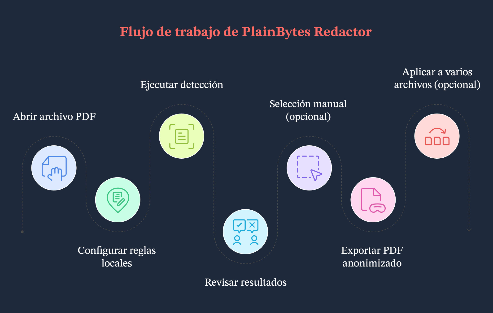

Redactada para la aplicación de escritorio actual para Windows. Si algo no coincide con la versión que tiene instalada, fíese de la interfaz de la aplicación.
1. Para qué sirve esta aplicación
1.1 Redacción real frente a superposición visual
Estos dos enfoques tienen implicaciones muy distintas para la seguridad y el cumplimiento:
Aspecto
Superposición visual (la típica “barra negra”)
Redacción real (el objetivo de esta aplicación)
Dentro del PDF
El texto, los vectores o las imágenes pueden seguir dentro del archivo, a menudo solo cubiertos por otro elemento gráfico.
El contenido coincidente se elimina del flujo del documento para que no pueda recuperarse mediante un análisis normal.
Copiar / buscar
Según la herramienta, el texto “oculto” podría seguir copiándose.
El objetivo es que el texto seleccionable ya no contenga las cadenas sensibles (compruébelo en el archivo exportado).
Más adecuado para
Lectura en pantalla o cubrimientos rápidos.
Compartir externamente, archivar, auditorías, diligencia debida: cualquier caso en el que el contenido deba desaparecer definitivamente.
PlainBytes Redactor está diseñado para la redacción real. Use Confirmar para dejar claro qué áreas se eliminarán realmente al exportar.
1.2 Qué significa “local y sin conexión”
El trabajo permanece en este PC: abrir el PDF, aplicar reglas, usar IA local opcional, escribir el archivo redactado y validar se ejecutan localmente.
No se suben documentos para redactar: el producto no está diseñado para enviar sus archivos a la nube como parte del proceso de redacción.
Distinto de la ayuda y las actualizaciones: al abrir Ayuda, Buscar actualizaciones u opciones similares, Windows puede iniciar el navegador o Microsoft Store. Eso no afecta a que el flujo de redacción se mantenga sin conexión.
1.3 Cuándo encaja bien
Flujos legales, financieros, sanitarios, del sector público o de auditoría donde se necesita revisión humana y una superficie de exposición menor ante filtraciones.
Necesita entregar un PDF, pero eliminar identificaciones, números de cuenta, datos de contacto y otros datos identificativos.
Tiene muchos PDF con el mismo diseño: tras confirmar en un archivo “modelo”, puede usar Aplicar a varios archivos para reutilizar la misma geometría en los demás (véase el paso G en §3 y §9).
2. Conceptos clave
2.1 Marcas de redacción (RedactionMark)
Internamente, cada área que podría redactarse es una marca de redacción: piense en “un rectángulo en una página más metadatos”.
Página y rectángulo: posición y tamaño en coordenadas del PDF.
Estado: pendiente o confirmada. Solo las marcas confirmadas se eliminan al exportar.
Origen: reglas (patrones/regex), IA o selección manual, para distinguir los aciertos automáticos de lo que dibujó usted.
Categoría y riesgo: se usan para filtrar, ordenar y actuar en bloque en la lista de auditoría.
2.2 Qué significa “confirmar” y por qué es manual
La automatización no tiene la última palabra: tanto las reglas como la IA pueden marcar de más texto normal o pasar por alto datos sensibles reales, así que la aplicación nunca presupone que “todo lo encontrado debe eliminarse”.
Confirmar = aprobar tras revisar: una vez confirmada, la marca se incluye en el conjunto de exportación; lo que queda pendiente no se trata como definitivo.
Encaja con revisiones reales: este paso adicional se alinea con la revisión por dos personas, los rastros de auditoría y evita borrar por error una página entera con un clic.
2.3 Reglas frente a IA local
Aspecto
Motor de reglas
IA local
Base
Patrones integrados o personalizados (palabras clave, regex), según la región y el escenario configurados.
Modelos ONNX locales para detección semántica o de entidades; la calidad depende de los idiomas y de los datos de entrenamiento.
Previsibilidad
Cuando los patrones son claros, el comportamiento es estable y fácil de explicar.
Más flexible con el diseño y la redacción; los casos límite requieren una segunda mirada.
Uso típico
Campos muy estructurados: identificaciones, teléfonos, correos.
Texto narrativo menos estructurado: nombres, direcciones u organizaciones sin formato fijo.
En la práctica suelen ejecutarse juntos; la lista de auditoría muestra todo como marcas, y usted decide qué confirmar.
2.4 La base para procesamiento por lotes
No existe un flujo de “guardar esto como plantilla con nombre y elegirla después”. Lo que usa el lote es una base geométrica en memoria: al entrar al lote mediante Aplicar a varios archivos, la aplicación convierte cada marca confirmada del documento actual en un rectángulo normalizado (página + coordenadas relativas al tamaño de página), solo para esa sesión por lotes.
Para cada PDF de la cola, el motor por lotes solo aplica esos rectángulos: no ejecuta un nuevo pase completo de reglas ni de IA por archivo.
Cuándo está bien: varias exportaciones del mismo sistema con el mismo diseño y las regiones sensibles en los mismos lugares (por ejemplo, extractos uniformes). Si el diseño cambia, los cuadros pueden caer en el lugar equivocado: revise los primeros resultados.
Reglas del centro: ayudan a encontrar coincidencias en el flujo de archivo único actual; no se vuelven a ejecutar automáticamente para cada archivo de la cola. El lote se basa en las posiciones confirmadas que ya dejó fijadas.
3. Flujo de trabajo completo
Ejemplo de partida
En este ejemplo, una persona del área legal debe publicar externamente un PDF de baja de empleado de 8 páginas. Deben eliminarse números de móvil, fragmentos de tarjeta bancaria y direcciones de correo personales. El archivo es un PDF electrónico real con texto seleccionable, no un escaneo plano.

Vista general del flujo
Paso A: abrir el documento
Use Abrir o arrastrar y soltar para cargar el PDF (también se admiten formatos de imagen comunes; el recorrido dentro de la aplicación puede variar).
Todo —vista previa, detección y marcas— queda ligado a este archivo de origen, así que abra la versión que realmente quiere redactar.
Paso B: elegir región y escenario en el centro de reglas
Abra Reglas, elija una región (país/área) y luego un escenario de negocio (general, financiero, etc.). Active o desactive reglas integradas, o añada reglas personalizadas si hace falta.
El conjunto efectivo de reglas cambia según la región y el escenario; elegir el escenario equivocado puede dejar reglas útiles desactivadas o generar más ruido. Puede guardar preferencias antes de cerrar para que el siguiente documento similar sea más rápido.
Paso C: ejecutar la detección
A la derecha, en la política de escaneo, haga clic en Iniciar detección (o el control equivalente) y espere a que terminen el modelo del documento y el pase completo.
Los resultados de reglas e IA local se convierten en una lista de marcas pendientes. Si cambia región, escenario o reglas, ejecute de nuevo la detección para actualizar la lista.
Paso D: revisar en la lista de auditoría
En el seguimiento de auditoría de la derecha, revise los elementos uno por uno o use filtros. Confirme lo que debe desaparecer; quite la confirmación o elimine filas para falsos positivos (los controles exactos dependen de la versión). Las superposiciones amarillas de la vista previa suelen mantenerse sincronizadas: un clic puede alternar el estado de confirmación.
Este paso evita borrar lo equivocado o dejar algo atrás; la exportación solo respeta las marcas confirmadas.
Paso E: dibujar cuadros para lo que falte
Arrastre rectángulos en la vista previa izquierda sobre cualquier cosa que las reglas o la IA no hayan detectado, pero que usted sabe que debe redactarse. Ajuste los colores de selección si ayuda sobre fondos cargados.
La detección automática no lo encontrará todo; los cuadros manuales son su red de seguridad.
Paso F: exportar
Elija Exportar redactado, seleccione dónde guardar y lea el resumen final (cuántos elementos se eliminaron, limpieza de metadatos, mensajes de validación).
Obtendrá una copia lista para compartir; el resumen sirve como comprobación rápida. Si muestra advertencias, abra el PDF exportado y revise algunas páginas.
Paso G (opcional): aplicar a más archivos
Cuando todo lo que deba redactarse esté confirmado en este PDF, use Aplicar a varios archivos (o la entrada equivalente). La aplicación genera la base normalizada descrita arriba y abre la redacción por lotes. Añada más PDF con el mismo diseño, elija una carpeta de salida, indique si desea eliminar metadatos y ejecute.
Si los diseños coinciden realmente, evita repetir las mismas confirmaciones archivo por archivo; el lote aun así elimina físicamente las regiones encuadradas. Importante: esto no es una plantilla reutilizable con nombre en disco. No hay un archivo de plantilla separado; la base procede de este documento confirmado. El lote tampoco vuelve a ejecutar reglas/IA por cada archivo de la cola. Si el diseño de un archivo cambió, vuelva al flujo de archivo único.
4. Recorrido por la ventana principal
Ventana principal
4.1 Vista previa (izquierda)
Para qué sirve: muestra cada página del PDF (o imagen) para que los números de página y el diseño coincidan con el archivo.
Marcas: las áreas pendientes, automáticas o manuales, se muestran resaltadas; hacer clic en una región suele alternar el estado de confirmación junto con la lista (la indicación amarilla depende de la versión).
Cuadros manuales: haga clic y arrastre en la vista previa para añadir una marca rectangular.
4.2 Panel de política de escaneo
Para qué sirve: punto de entrada para ejecutar detección (por ejemplo, Iniciar detección), alineado con la región, el escenario y los conjuntos de reglas del centro.
Por qué está separado: distingue “cuándo escanear todo el documento” de “cómo trabajar con la lista de auditoría”, lo que reduce confusiones.
4.3 Apariencia de la selección
Para qué sirve: ajustar el aspecto de las selecciones manuales —borde, relleno, colores personalizados— para que los cuadros sigan visibles sobre fondos complejos.
Nota: esto es solo ayuda visual; la redacción sigue dependiendo de la confirmación y de la exportación.
4.4 Lista de seguimiento de auditoría
Para qué sirve: agrupa resultados sensibles del documento abierto, con filtros por categoría y riesgo, además de acciones de confirmar o limpiar por fila o en bloque.
Sincronización con la vista previa: seleccionar o actuar sobre una fila normalmente desplaza o resalta la página; hacer clic en una marca de la vista previa actualiza el estado en la lista.
4.5 Barra de herramientas (de arriba abajo)
Abrir: elija un PDF local o una imagen compatible.
Cerrar documento: cierra el archivo actual.
Página anterior / siguiente: use la barra de herramientas. En la página de archivo único, Page Up / Page Down se gestionan por separado para desplazar la vista previa (véase §7.3).
Reglas: abre el centro de reglas.
Lote: abre la redacción por lotes.
Exportar redactado: disponible cuando hay marcas confirmadas.
Más (⋯): idioma, ayuda, comentarios, actualizaciones, acerca de, etc.
La barra de estado muestra, entre otras cosas, si la aplicación está lista, el nombre del archivo actual y si el entorno de IA local está preparado.
5. Centro de reglas
5.1 Región y escenario de negocio
Región: país/área; determina qué patrones integrados se aplican (formatos de identificación, reglas de teléfono, etc.).
Escenario de negocio: reduce o prioriza grupos de reglas (general, financiero, sanitario, legal/gobierno) para que los valores predeterminados encajen con el tipo de documento.
En conjunto: configure primero la región y luego el escenario; tras los cambios, ejecute de nuevo la detección o podría seguir viendo un pase anterior.
5.2 Reglas integradas frente a personalizadas
Integradas: incluidas con la aplicación, agrupadas por tipo (identidad, finanzas, dirección, contacto, …), activables por regla, respaldadas por datos locales y totalmente sin conexión.
Personalizadas: una etiqueta y un patrón: subcadena simple (sin distinguir mayúsculas/minúsculas) o expresión regular .NET. Útiles para códigos internos que las reglas integradas no conocen. Puede existir un límite de reglas añadibles.
5.3 Cuándo ajustar las reglas
Demasiado ruido: desactive temporalmente reglas demasiado amplias o elija un escenario más preciso.
El mismo patrón aparece una y otra vez y nada integrado coincide: añada una regla personalizada para reducir los cuadros manuales.
Configuración desviada: Restaurar valores predeterminados borra las sustituciones locales (se le pedirá confirmación).
6. Barra lateral de auditoría
6.1 Por qué la confirmación funciona así
Una fila suele agrupar varias apariciones del mismo tipo sensible o clave en distintas páginas; confirmarla significa que todos esos puntos deben eliminarse.
Pendiente separa la “suposición del modelo” de la “decisión humana”, de modo que nada se escribe en bloque sin revisión.
Por diseño, el motor de exportación solo consume marcas confirmadas.
6.2 Filtros y confirmación masiva
Filtro: limite por categoría o riesgo para abordar primero elementos de alto riesgo o un tipo de campo (por ejemplo, solo contactos).
En bloque: cambie el estado de confirmación de todo lo visible con el filtro actual (el texto depende de la versión). Es útil cuando todo un grupo está claramente bien o claramente mal.
Consejo: revise el filtro activo antes de una acción en bloque para no incluir filas que no quería tratar.
6.3 Niveles de riesgo
Los niveles (crítico, alto, sospechoso, medio, bajo, por ejemplo) ayudan a ordenar y filtrar para que los resultados más riesgosos aparezcan primero. No obligan a confirmar: usted sigue decidiendo qué redactar.
7. Selecciones manuales
7.1 Cuándo dibujar sus propios cuadros
Las reglas y la IA pasaron por alto algo que sabe que debe quitarse: anotaciones manuscritas en fotos, zonas de diseño poco habituales, etc.
Los resultados están fragmentados o desalineados: elimine las filas automáticas incorrectas y dibuje un cuadro más preciso.
Contenido solo escaneado tratado como imagen: el comportamiento difiere de los PDF con texto; a menudo dependerá de cuadros manuales (véanse las preguntas frecuentes).
7.2 Trabajar con marcas detectadas automáticamente
Orden práctico: ejecutar detección → usar la lista de auditoría para limpiar falsos positivos evidentes y detectar patrones → añadir algunos cuadros manuales para omisiones reales → revisar rápidamente la vista previa página por página. Las marcas manuales y automáticas se tratan igual al exportar; lo importante es si están confirmadas.
7.3 Atajos de teclado (vista previa y marcas)
Mientras la página de archivo único está cargada, registra PreviewKeyDown en la ventana principal. Los atajos siguientes solo funcionan con un documento abierto y la aplicación sin actividad. No están conectados a los botones de página anterior/siguiente de la barra de herramientas.
Tecla
Acción
Tab
Marca de redacción siguiente.
Shift + Tab
Marca de redacción anterior.
←↑→↓
Sin modificadores: ←↑ seleccionan la marca anterior, →↓ la siguiente. Con cualquier modificador pulsado: solo ↑↓ desplazan la vista previa un paso fijo; ←→ no se gestionan en esa rama.
Enter
Sin modificadores: alterna la confirmación de la marca seleccionada.
Delete
Sin modificadores: elimina la marca seleccionada.
Page Up / Page Down
Desplaza la vista previa aproximadamente una altura de ventana.
Home / End
Salta al inicio / final de la vista previa.
8. Exportación
8.1 Lista de comprobación previa a la exportación
Compruebe que este sea el archivo que quiere publicar (número de páginas, adjuntos).
Todo lo que debe redactarse está confirmado; lo que debe permanecer visible está limpiado o eliminado de la lista.
Ha revisado visualmente las páginas clave en la vista previa, incluidas páginas escaneadas o secciones extrañas encuadradas manualmente.
Sabe que la exportación escribe un archivo nuevo (o en la ruta elegida) y normalmente no sobrescribe el original; el comportamiento sigue el cuadro de diálogo de guardado.
8.2 Por qué eliminar metadatos
Además del contenido de las páginas, los PDF pueden llevar autor, productor, marcas de tiempo, XMP y más. Redactar el texto pero dejar metadatos puede seguir filtrando cuentas internas o historial de edición. La aplicación puede limpiarlos al exportar (y opcionalmente en lotes). Para cualquier documento que salga de la organización, suele ser mejor dejar activada la limpieza de metadatos si la interfaz la ofrece.
8.3 Leer el resumen
¿El número de elementos eliminados físicamente coincide con lo que vio?
¿Indica que los metadatos se limpiaron?
Si ve advertencias de validación de texto, el muestreo automático encontró algo extraño: abra el PDF exportado y compruébelo. No trate el resumen por sí solo como prueba de residuo cero.
9. Procesamiento por lotes
9.1 Qué hace realmente el modo por lotes
Después de entrar por Aplicar a varios archivos con una base, cada PDF de la cola sigue una ruta de solo aplicación de rectángulos: los rectángulos normalizados se convierten a coordenadas absolutas por página, se crean marcas, el contenido se elimina físicamente y los metadatos pueden limpiarse opcionalmente. No ejecuta de nuevo detección por reglas ni IA por archivo.
Así, las reglas y la IA usadas en modo de archivo único le ayudaron a encontrar y confirmar en el modelo; el lote simplemente copia donde confirmó a otros archivos con la misma geometría.
9.2 Casos de uso adecuados
Muchos PDF de un mismo sistema con el mismo diseño y regiones sensibles en las mismas posiciones relativas.
Ya terminó la detección y confirmación en un ejemplar y quiere evitar repetir ese trabajo en copias casi idénticas.
9.3 Puntos a vigilar
No hay archivo de plantilla guardado: al cerrar la ventana de lote se pierde la base en memoria; la próxima vez, créela de nuevo desde Aplicar a varios archivos.
Abrir Lote desde la barra de herramientas sin ese recorrido puede dejarle sin base; Iniciar podría quedar deshabilitado.
Pequeños cambios de diseño pueden causar omisiones o regiones incorrectas; revise a muestra los primeros resultados.
Active borrar propiedades y datos ocultos cuando se ofrezca para compartir externamente.
Algunos tipos de documento o niveles de licencia pueden limitar el lote; si Aplicar a varios archivos aparece deshabilitado, esa es la señal.
10. Preguntas frecuentes
10.1 ¿Por qué hay tantos falsos positivos?
Tanto las reglas como la IA se basan en heurísticas: cadenas que parecen sensibles, nombres de lugares que coinciden con nombres de personas, fragmentos de tablas, etc. Ajustar escenario/reglas, desactivar una regla ruidosa o limpiar la confirmación en la lista suele bastar para controlarlo. La confirmación manual es intencional: reduce la probabilidad de eliminar con un clic algo que todavía necesita.
10.2 ¿Qué ocurre con los PDF escaneados?
Si el PDF es en realidad una imagen de página sin una capa de texto real, las reglas y la IA tienen menos con qué trabajar, por lo que dependerá más de cuadros manuales o del flujo específico para raster que ofrezca la versión (siga las indicaciones en pantalla). Conviene saber desde el principio si se trata de un PDF nativo digital o de un escaneo.
10.3 ¿Puedo redactar imágenes? ¿Por qué no se reconoce el texto en fotos?
Sí. Los formatos de imagen comunes pueden abrirse como documentos; seguirá usando vista previa, marcas y exportación. Para mantener razonables el tamaño del instalador y el coste en ejecución, esta versión no incluye OCR: el texto de las fotos no se vuelve seleccionable, por lo que la detección textual por reglas o IA apenas aplica. Redacte las áreas sensibles dibujando cuadros (y usando atajos de teclado para moverse entre marcas). Si necesita “reconocer y luego comparar”, haga OCR antes en otra herramienta o proporcione un PDF con capa de texto.
10.4 ¿Cómo hago una comprobación rápida de una exportación?
En cualquier lector PDF, pruebe seleccionar todo / copiar y buscar cadenas que sepa que eran sensibles.
Revise visualmente encabezados, pies de página y notas al pie.
Lea el resumen de validación de exportación de la aplicación; si muestra advertencias, revise primero esas páginas.
Para casos de muy alto riesgo, añada los controles habituales de su organización: segunda herramienta, revisión impresa, etc.